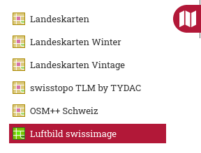
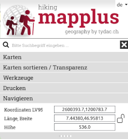
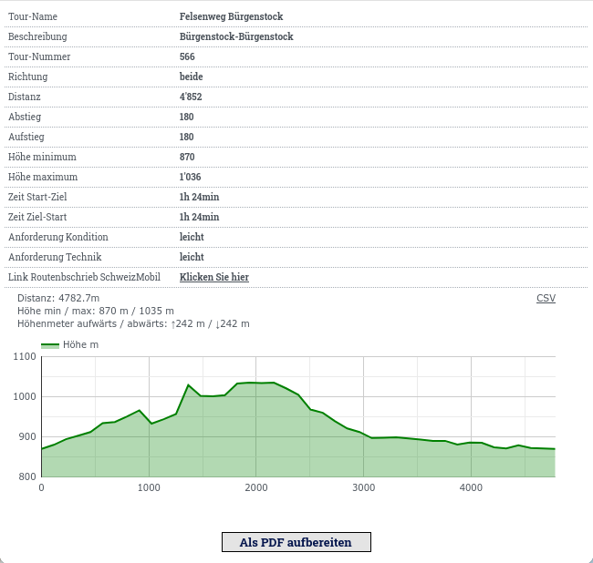
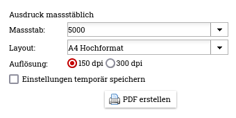
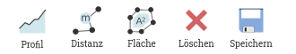
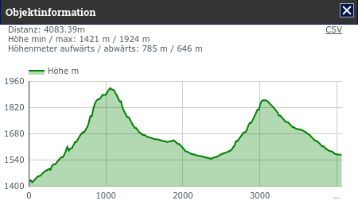
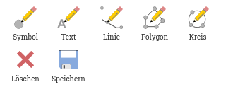

MAP+ Hike - Hilfetexte
Themen der Hilfe
Karten und Funktionen
Werkzeuge
Navigation
Um in der Karte zu navigieren, haben Sie folgende Möglichkeiten:

- Zoom in/out: Mausrad, +/- Funktionen oben rechts, +/- Tastatur
- Verschieben: Karte mit gedrückter Maustaste ziehen oder Pfeiltasten der Tastatur
- Zoomfenster aufziehen: Shift und mit gedrückter Maustaste Fenster
aufziehen
- Lokalisierung mit GPS
- Auf Initialzoom zurück (ganzes Gebiet): Home-Funktion oben rechts
Suche
Gesucht werden kann nach:
- Gemeinde
- Postleitzahl/Ort
- SchweizMobil Routen und Etappen
- Points of Interest wie Hotels, Restaurants etc.
- Flurnamen, Geländenamen, Ortsnamen, Bergspitzen etc. (swissnames von swisstopo, über 400'000 Objekte)
Tipps für eine effiziente Suche
Je mehr sie die Suche verfeinern, desto weniger Treffer werden angezeigt (besonders dort, wo es viele Treffer gibt, wie Bahnhofstrasse). Beispiele, Suche nach Objekten:
- Stadt Chur: chur
- Rund um Saoseo: saoseo -> Rifugio, See, Flurmane etc.
- Bernina: bernina -> Ospizio, Restaurants, alle möglichen Routen und Etappen SchweizMobil
- Hotel Sternen Muri: "ster mur"
- Berghütte Blüemlisalp: "blü berg"
Anzeige und Suche von Koordinaten

Ist der Vorhängeschloss offen (blau) werden die Koordinaten
dynamisch angezeigt (beim bewegen der Maus über die Karte)

Ist der Vorhängeschloss geschlossen (rot) werden die
Koordinaten nur beim Klicken angezeigt. Dies erlaubt Ihnen einen
bestimmten Punkt anzuklicken und dann die Koordinaten zu kopieren
(markieren, rechte Maustaste, Kopieren oder markieren und STRG/C).
Für die Suche geben Sie die gesuchten Koordinaten
komma-separiert ein und drücken Sie die Eingabetaste.
Kartenauswahl
Hintergrundkarten

Als Hintergrundkarten stehen zur Verfügung (kann je nach
Anwendung abweichend sein):
- Landeskarten swisstopo
- Landeskarten Winter swisstopo
- Landeskarten Vintage swisstopo
- swisstopo TLM by TYDAC (TLM: Topographisches Landschaftsmodell)
- OSM++ Schweiz: Angereicherte OpenStreetMap-Daten
(OSM). OpenStreetMap ist eine freie, editierbare Karte der gesamten
Welt, die von Freiwilligen erstellt wird.
- Luftbild swisstopo swissimage
Datenbankabfragen und -downloads der SchweizMobil Daten

Klicken Sie auf die Funktion "Datenbank". Die SchweizMobil Daten können gefiltert, angezeigt und heruntergeladen werden:
Über die Tabellenfunktionen können die Daten sortiert und beliebig gefiltert werden, dies auch in Kombination mit geografischen Selektionen (Rechteck, Polygon). Die selektierten Daten können in verschiedenen Formaten heruntergeladen: MS-Excel, JSON, XML, CSV, Text etc.
Eine detaillierte Anleitung finden Sie auf gesonderte Hilfeseiten
Weitere Funktionen

Weitere Funktionen sind:
- Alle angezeigten Ebenen entfernen
- Google StreetView:
- in StreetView navigieren. Die Karte wird entsprechend nachgeführt
(Position und Richtung). Beachten Sie: insbesondere bei Fotos ist die
dort angegebene Richtung nicht immer zuverlässig.
- Sie können alternativ das StreetView-Objekt in der Karte
verschieben. Auch so wird nach der nächstgelegenen Aufnahme gesucht.
- Um mehr Platz für die Karte zur Verfügung zu haben, können Sie die
Kartenwahl-Steuerung verkleinern (auf die drei Punkte links der Karte
klicken)
- 3D-Ansicht des Gebiets starten
Kartenfunktionen

Menü Karten, es sind Ebenen für folgende Themen verfügbar:
- Wanderwege und Infrastruktur
- SchweizMobil Langsamverkehr
- SchweizMobil und swisstopo Wintersport
- Gastronomie und Unterkunft
- Verkehrsmittel
- Natur- und Umwelt
- Nützliche Informationen
Informationsabgfrage
Zu den meisten Objekten auf den Karten kann eine detaillierte Information abgefragt werden (auf das gewünschte Objekt klicken). Zu allen Wanderwegen und SchweizMobil Routen und Etappen wird zudem ein automatisch generiertes Profile angezeigt. Diese Information kann auch als PDF aufbereitet werden. Die SchweizMobil Objekte enthalten auch Links zu den Informationen auf SchweizMobil.
Beispiel:

Werkzeuge
Folgende Werkzeuge stehen zur Verfügung (Details dazu s. weiter unten):
- Messen und Bemassen unter "Messen"
- Zeichenwerkzeuge unter "Zeichnen"
Drucken
 PDF Druck, massstäblich
PDF Druck, massstäblich
Massstäbliches Drucken zu PDF. Untenstehende Dialogbox erscheint.
Wählen Sie einen Massstab, eine Vorlage (Layout), die gewünschte
Auflösung aus und geben Sie einen optionalen Title ein:

WICHTIG: Um die generierte PDF
Datei im Massstab zu drucken, schalten Sie beim Druckdialog vom
Acrobat Reader bei der Seiteneinstellung folgende Optionen aus respektive
stellen Sie diese folgendermassen ein (kann je nach Acrobat Version oder
falls Sie andere Programme benutzen abweichen):
- Seitenanpassung: keine (also weder "kleine Seiten vergrössern"
noch "grosse Seiten verkleinern")
- Automatisch drehen und zentrieren ausschalten
- Wählen Sie beim Drucker die richtige Papiergrösse und
Orientierung aus

Messen

Profil

Klicken Sie auf den gewünschten Startpunkt und erfassen dann beliebig viele Zwischenpunkte. Zum Abschliessen Doppelklick. Nach
Abschluss der Messung können Sie Punkte verschieben oder neue
Zwischenpunkte einfügen. Um einen neuen Profil generieren zu können,
wiederholen Sie einfach die Prozedur. Um aus der Funktion auszusteigen,
wählen Sie die Funktion erneut.
Bewegen Sie die Maus über das Profil, wird die Lage in der Karten angezeigt.
Sie können weiterhin Punkte der Polylinie hinzufügen und verschieben, das Profil wird aktualisiert.
Um die Funktion zu beenden, klicken Sie erneut auf das Symbol, wählen Sie eine andere Funktion oder wechseln Sie zu Karten oder suchen.

Distanz / Fläche
 Distanz
Distanz
Messen von Distanzen mittels Polylinie. Klicken Sie auf die gewünschten
Punkte. Zum Abschluss Doppeklick.
 Fläche
Fläche
Messen von Flächen. Klicken Sie auf die
gewünschten Punkte. Zum Abschluss Doppeklick.
Löschen: klicken Sie auf
Löschen, um alle Bemassungslinien zu löschen. Um einzelne
Bemassungslinien zu löschen, klicken Sie auf die gewünschte Linie. Der
Bemassungsdialog erscheint: Löschen = Papierkorb-Ikone.
Speichern: Bemassungslinien als
Lesezeichen speichern. Das Lesezeichen können Sie dann
entweder als solches speichern (übliche Browser-Funktionalität) oder
kopieren und versenden.
Zeichnen

 Symbole
Symbole
Klicken Sie auf die Funktion, um diese zu aktivieren. Eine Auswahl an
Symbole erscheint. Wählen Sie einen Symbol aus und positionieren Sie
diesen auf der Karte. Beliebig wiederholen. Um das Zeichnen
abzuschliessen schliessen Sie die Symbolliste, klicken erneut auf die
Funktion oder wählen Sie eine andere Funktion aus. Um ein Symbol zu
verschieben, anklicken und mit gedrückter Maustaste bewegen. Sie können
auch den Symbol ändern: anklicken und anderen Symbol aus der Liste
wählen.
Löschen:
- einzelne Symbole: anklicken und auf Papierkorb in der Symbolliste
klicken
- alle: Funktion "Alles löschen" verwenden
 Texte
Texte
Klicken Sie auf die Funktion, um diese zu aktivieren. Wählen Sie die
gewünschte Schriftart etc. aus. Positionieren Sie den Text nach
Belieben. Beliebig wiederholen. Um das Zeichnen abzuschliessen,
schliessen Sie die Dialogbox, klicken erneut auf die Funktion oder
wählen Sie eine andere Funktion aus. Um einen Text zu verschieben,
anklicken, Dialog erscheint; erneut anklicken und mit gedrückter
Maustaste bewegen. Sie können auch den Text und die Ausprägung ändern.
Löschen:
- einzelne Texte: anklicken und auf Papierkorb in der Dialogbox
klicken
- alle: Funktion "Alles löschen" verwenden
 Linien
Linien
Klicken Sie auf die Funktion, um diese zu aktivieren. Wählen Sie die
gewünschte Linienart etc. aus. Zeichnen Sie die Linie indem Sie beliebig
viele Stützpunkte zeichnen. Abschluss mit Doppelklick. Um das Zeichnen
abzuschliessen, schliessen Sie die Dialogbox, klicken erneut auf die
Funktion oder wählen Sie eine andere Funktion aus. Um eine Linie zu
verschieben oder zu verändern, anklicken, Dialog und Stützpunkte
erscheinen. Sie können die Linie als Gesamtes verschieben, einzelne
Stützpunkte verschieben oder Stützpunkte hinzufügen. Und auch die
Ausprägung anpassen.
Löschen:
- einzelne Linie: anklicken und auf Papierkorb in der Dialogbox
klicken
- alle: Funktion "Alles löschen" verwenden

 Flächen / Kreise
Flächen / Kreise
Klicken Sie auf die Funktion, um diese zu aktivieren. Wählen Sie die
gewünschte Linienart etc. aus. Zeichnen Sie die Fläche indem Sie
beliebig viele Stützpunkte zeichnen. Abschluss mit Doppelklick. Um das
Zeichnen abzuschliessen, schliessen Sie die Dialogbox, klicken erneut
auf die Funktion oder wählen Sie eine andere Funktion aus. Um eine
Fläche zu verschieben oder zu verändern, anklicken, Dialog und
Stützpunkte erscheinen. Sie können die Fläche als Gesamtes verschieben,
einzelne Stützpunkte verschieben oder Stützpunkte hinzufügen. Und auch
die Ausprägung anpassen.
Löschen:
- einzelne Fläche: anklicken und auf Papierkorb in der Dialogbox
klicken
- alle: Funktion "Alles löschen" verwenden
Speichern: Zeichnungen als Lesezeichen
speichern. Das Lesezeichen können Sie dann entweder als solches speichern
(übliche Browser-Funktionalität) oder kopieren und versenden.
Mobile Version
MAP+ Hike ist in einer Version für Mobiltelefone mit reduzierter Funktionalität verfügbar.
Folgenden Funktionen stehen zur Verfügung:
- Auswählen Hintergrundkarte
- Ebenenwahl (Panel links)
- GPS Lokalisation
- Alle Themen entfernen
- Zoom zur Ausdehnung der Hintergrundkarte
- Informationsabfragen zu den Themen